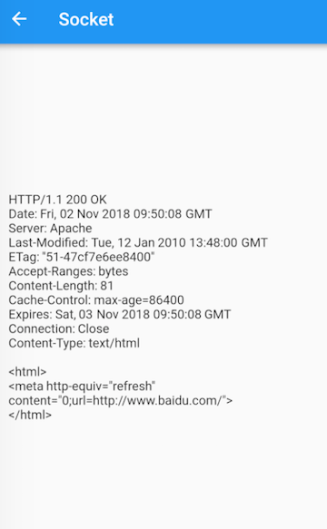

11.6 使用Socket API
11.6.1 Socket 简介
Socket API 是操作系统为实现应用层网络协议提供的一套基础的、标准的API，它是对传输层网络协议（主要是TCP/UDP）的一个封装。Socket API 实现了端到端建立链接和发送/接收数据的基础API，而高级编程语言中的 Socket API 其实都是对操作系统 Socket API 的一个封装。
我们之前介绍的 Http 协议和 WebSocket 协议都属于应用层协议，除了它们，应用层协议还有很多如：SMTP、FTP 等，这些应用层协议都是通过 Socket API 来实现的。
综上，如果我们需要自定义协议或者想直接来控制管理网络链接、又或者我们觉得自带的 HttpClient 不好用想重新实现一个，这时我们就需要使用Socket。Flutter 的 Socket API 在 dart:io 包中，下面我们看一个使用 Socket 实现简单 http 请求的示例。
11.6.2 使用 Socket 实现Http Get请求
以请求百度首页为例：
class SocketRoute extends StatelessWidget {
const SocketRoute({Key? key}) : super(key: key);
@override
Widget build(BuildContext context) {
return FutureBuilder(
future: _request(),
builder: (context, snapShot) {
return Text(snapShot.data.toString());
},
);
}
_request() async {
//建立连接
var socket = await Socket.connect("baidu.com", 80);
//根据http协议，发起 Get请求头
socket.writeln("GET / HTTP/1.1");
socket.writeln("Host:baidu.com");
socket.writeln("Connection:close");
socket.writeln();
await socket.flush(); //发送
//读取返回内容，按照utf8解码为字符串
String _response = await utf8.decoder.bind(socket).join();
await socket.close();
return _response;
}
}
可以看到，使用Socket需要我们自己实现Http协议（需要自己实现和服务器的通信过程），本例只是一个简单示例，没有处理重定向、cookie等。本示例完整代码参考示例demo，运行后效果如图11-3所示：

可以看到响应内容分两个部分，第一部分是响应头，第二部分是响应体，服务端可以根据请求信息动态来输出响应体。由于本示例请求头比较简单，所以响应体和浏览器中访问的会有差别，读者可以补充一些请求头(如user-agent)来看看输出的变化。